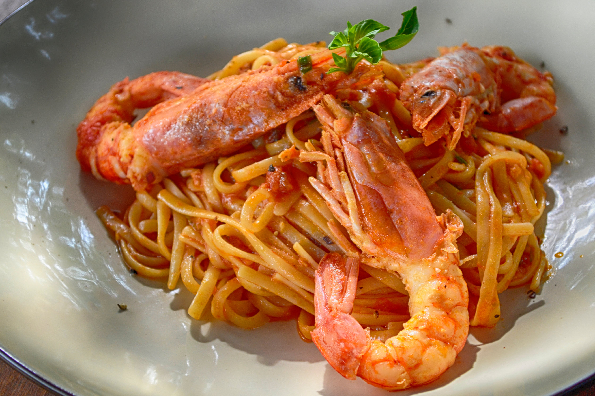

Garlic Prawn Udon
Home

Description
Hong Kong style udon noodles with garlic buttered prawns
Ingredients
- 2 udon noodles 200g pre-cooked (can use egg noodles)
- 1 tsp sesame oil
- 2 headed cups of sliced cabbage
- 1/2 Tbs soy sauce, plus 1 1/2 Tbs extra
- 4 garlic cloves
- 200g peeled and deveined prawns
- 1/2 tsp chilli flakes
- 3 Tbs oyster sauce
- 1/2 cup finely sliced spring onion
- Vegetable oil
Steps
- Place noodles in a bowl of boiling water to seperate
- Once seperated toss with sesame oil
- Heat vegetable oil in wok on high heat
- Stir fry cabbage until charred
- Add 1/2 tsp sugar + 1/2 Tbs of soy sauce
- Fry until cabbage is coloured (approx. 1 minute)
- Add garlic stir fry for 20 secs
- Add prawns and chilli powder and stir until prawns are just cooked
- Add noodles, remaining soy sauce, sugar & oyster sauce
- Stir fry for another half minute until sauce has thickened then toss in the spring onions